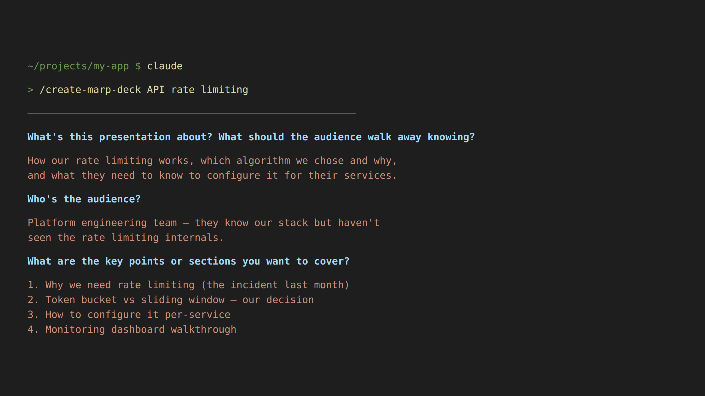
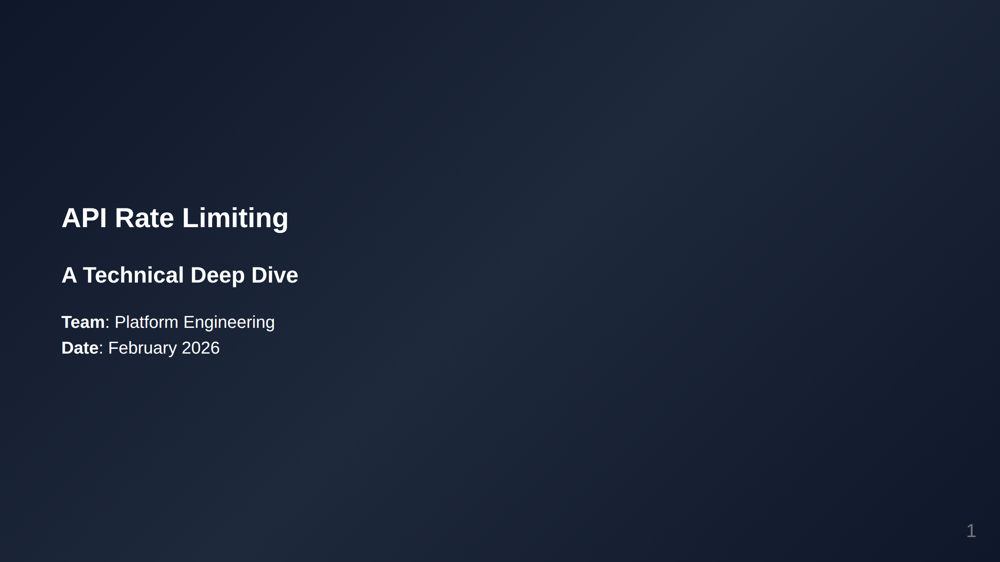
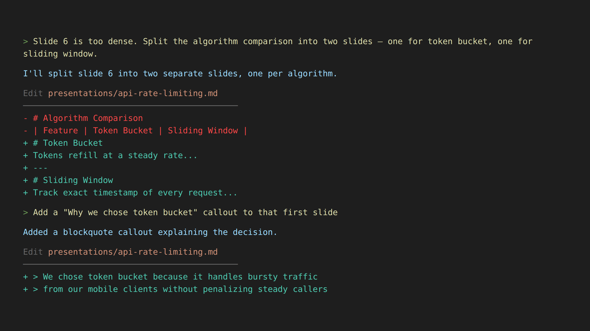
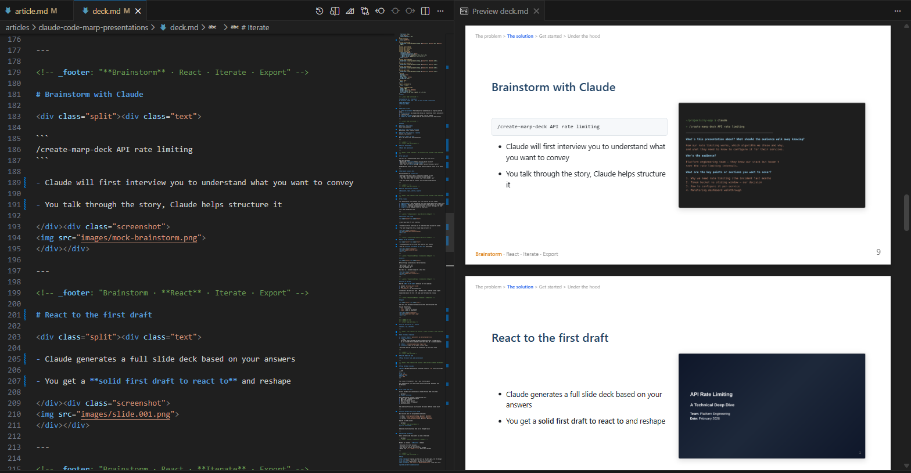
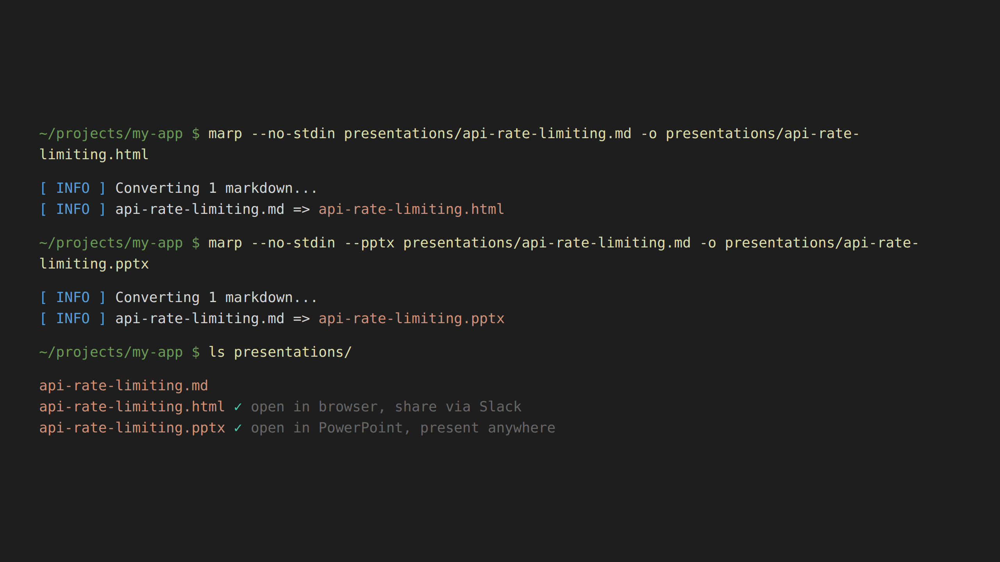
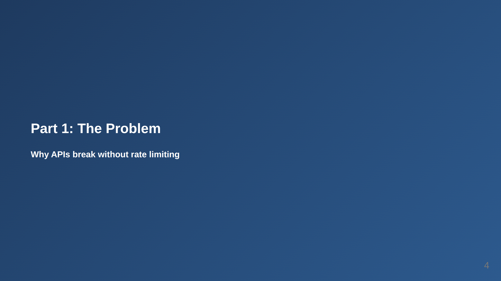
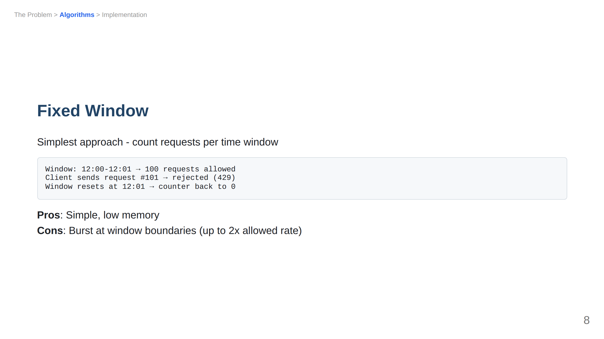

The hard part of building a presentation is figuring out the story. What are you trying to say? What’s the structure? Which sections build on which? Where does the data go, table or bullets? Before the comparison or after?
What would help is having something to react to. Starting from zero is hard. Reacting to a draft is fast. “Move this before that” is way easier than “what should I say?”
That’s the workflow I want to show you. I use Claude Code + Marp to think through presentations. Claude helps me brainstorm the story, gives me a first draft to react to, and then I iterate, either through “conversation” or by editing the Markdown directly. The whole thing is a text file. 🎉
The process has four stages: Brainstorm, React, Iterate, Export. Let me walk through each one.
You kick things off with a slash command (I will provide you with this command later):
/create-marp-deck API rate limitingClaude starts by interviewing you, asks about the goal, audience, key points, any data you want to include. This partforces you to articulate the story before a single slide exists.

Think of it as a lightweight brainstorm: you talk through what you’re trying to say, and Claude helps you structure it.
Once you’ve aligned on the structure, Claude generates the full Marp Markdown file and exports it. You get a solid first draft you can react to and reshape.

That title slide came from this Markdown:
<!-- _class: lead title-slide -->
# API Rate Limiting
## A Technical Deep Dive
**Team**: Platform Engineering
**Date**: February 2026Is it perfect? Probably not. But now you have something concrete, with sections, structure, and a story, that you can push around. That’s so much faster than starting from a blank canvas.
When you go through the slides, you feel if the story is coherent and clear.
While reviewing the draft, it will inevitably spark ideas: “oh, I should add a comparison table here,” “this section is too dense, maybe split it into two,” “move this summary up to the top.”
One way to make such edits, is to ask Claude Code to do that:
"Slide 6 is too dense. Split the algorithm comparison into
two slides, one for token bucket, one for sliding window."
You can also edit in VS Code with the Marp extension for live preview. Open the .md file, hit Ctrl+Shift+V, and you get the source on the left with rendered slides on the right. Claude Code edits the file, VS Code detects the change, and the preview updates automatically. (I keep both open side by side and it just works.)

When you’re done, you get three files:
.md – the source (version-controlled, diffable).html – open in any browser, share via Slack.pptx – open in PowerPoint, present anywhere$ marp --no-stdin deck.md -o deck.html
[ INFO ] Converting 1 markdown...
[ INFO ] deck.md => deck.html
The skill runs the export commands automatically after generating the deck. A 15-slide deck converts in about 2 seconds.
The standard PPTX export renders each slide as an image — pixel-perfect, but you can’t edit the text in PowerPoint or Google Slides. If you need editable text, Marp has a --pptx-editable flag that uses LibreOffice under the hood to produce real text boxes.
The catch: LibreOffice creates text boxes that are too narrow, so text wraps and overlaps. The skill includes a python-pptx post-processing script that automatically widens the text boxes to fix this. Just ask for “editable PPTX” and the skill handles the rest — the LibreOffice conversion, the text box fix, everything.
OK, are you ready? Here’s everything you need:
Install Marp CLI:
npm install -g @marp-team/marp-cliGrab the skill:
git clone https://github.com/Omerr/claude-skills.git ~/claude-skills
ln -s ~/claude-skills/commands/create-marp-deck.md ~/.claude/commands/Run it:
/create-marp-deck your topic hereIterate: React to the draft, refine through conversation or VS Code, export.
That’s it. Four steps. Fork the repo and customize the conventions to match your style.
Want to see this workflow in practice? You’re looking at it.
I wrote this article by first creating a slide deck using exactly the process I described above. I ran /create-marp-deck, answered the interview questions, got a first draft, and iterated until the story felt right. You can see the deck here.
Why start with slides? Because a deck forces you to be concise and to go through the story. If the story doesn’t flow across 15 slides, it won’t flow across 1,500 words either. The deck became my outline, and once I had a coherent structure there, writing the article was much easier.
So if you’re ever staring at a blank doc thinking “I should write a blog post about X,” try making a deck first. You might be surprised how much faster the writing goes when the story is already figured out. 😎
If you’re curious about what makes this work, read on. If not, you’re all set. 🙌🏻
Marp (Markdown Presentation Ecosystem) converts .md files into slides. Your deck starts with frontmatter:
---
marp: true
theme: default
paginate: true
size: 16:9
---Four lines and you have widescreen, paginated slides. Slide breaks are just --- in the Markdown. Your presentation is a text file: version-controlled, diffable, and AI-editable.
You could just ask Claude Code to “make me a Marp presentation” every time. But you’d spend half the conversation explaining your preferred format, color palette, and slide structure.
Instead, I created a Claude Code skill, a reusable set of instructions that Claude follows whenever you invoke it. It has two parts:
The full skill is about 200 lines. That sounds like a lot, but you write it once and then every deck you create follows the same polished conventions automatically.
Each section of the deck gets its own gradient background. So when you’re presenting, the audience intuitively knows when you’ve moved to a new topic:

Applied via CSS classes in the skill:
<!-- _class: lead part-problem -->
# Part 1: The ProblemThis is my favorite part of the whole setup.
Every content slide has a breadcrumb header at the top that shows where you are in the deck:

See that header? “The Problem > Algorithms > Implementation”, with “Algorithms” highlighted in blue.
In Marp, this is done with a simple HTML comment:
<!-- header: "The Problem > **Algorithms** > Implementation" -->The **bold** text renders in blue (via CSS header strong { color: #2563eb; }), while the rest stays gray. You set it once per section and it persists until you change it.
How often have you sat through a presentation wondering “wait, where are we?” 🤔
The hard part of presentations is telling a coherent story. Get yourself a first draft to react to, iterate until it flows, and export. That’s it.
If you want to try it: npm install -g @marp-team/marp-cli, grab the skill file, and run /create-marp-deck. You’ll have a deck in minutes and a workflow you can reuse for every presentation after that.
Omer Rosenbaum is Swimm’s Chief Technology Officer. He’s the author of the Brief YouTube Channel. He’s also a cyber training expert and founder of Checkpoint Security Academy. He’s the author of Product-Led Research, Gitting Things Done (in English) and Computer Networks (in Hebrew). You can find him on Twitter.